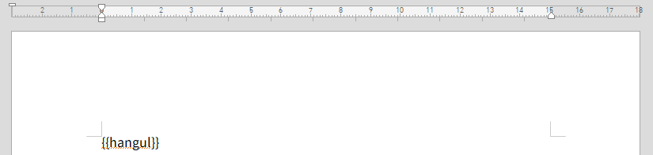
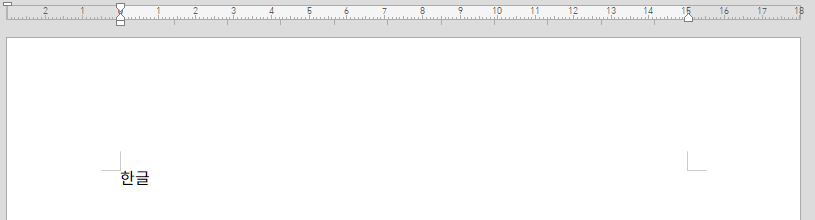
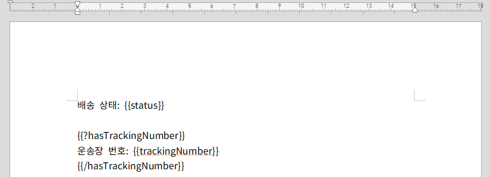
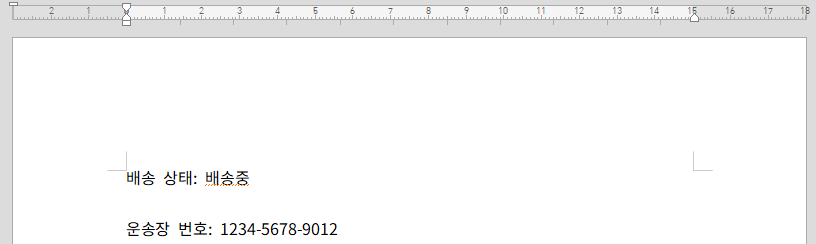
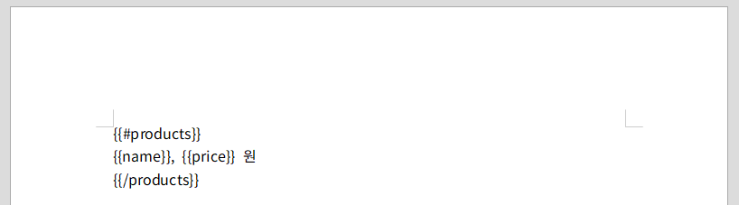
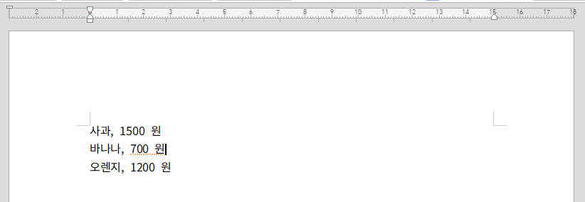
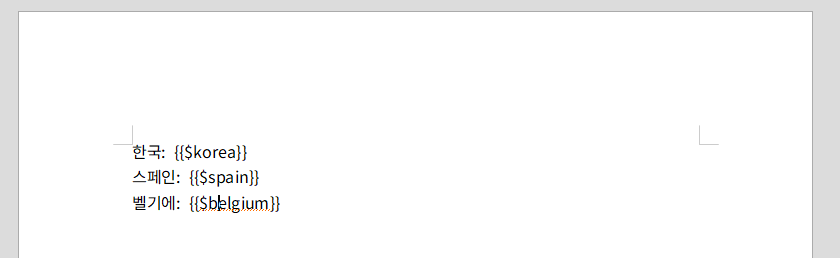
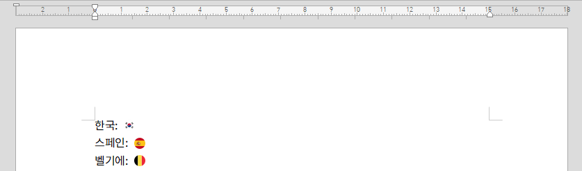
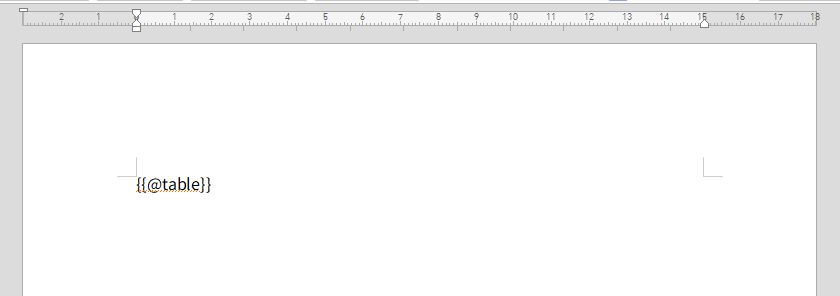
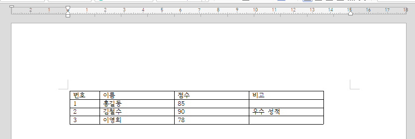

2. 템플릿 문법
2.1 템플릿의 종류
hwpxTemplater은 기본적으로 {{로 시작하고 }}로 끝나는 태그 내부에 특정한 데이터를 렌더링하여 다운로드하는 방식으로 동작합니다.
사용자가 태그 내부에 key 값을 기입하면 해당 key에 대응되는 value 값을 기입하는 방식입니다.
라이브러리에서 제공하는 태그의 종류로는 기본적으로 다음 다섯 가지가 있습니다.
| 예시 | 태그 | 설명 |
|---|---|---|
{{replace}} |
기본 태그 | 기본적인 텍스트를 hwpx 파일에 렌더링하기 위한 태그입니다. |
{{?if}}{{/if}} |
조건문 태그 | 조건문이 참인지 거짓인지 여부에 따라 태그 내 데이터를 렌더링할지 여부를 결정하는 태그입니다. |
{{#loop}}{{/loop}} |
반복문 태그 | 태그 내 데이터를 반복문으로 렌더링하기 위한 태그입니다. |
{{$image}} |
이미지 태그 | 이미지를 hwpx 파일에 렌더링하기 위한 태그입니다. |
{{@table}} |
테이블 태그 | 테이블을 hwpx 파일에 렌더링하기 위한 태그입니다. |
2.2 기본 태그
기본 태그는 hwpxTemplater의 가장 기본적인 태그로, hwpx 템플릿 파일에 특정 데이터를 렌더링하기 위해 사용됩니다.
|  |
|---|
예를 들어 위처럼 hwpx 템플릿 파일에 {{hangul}}이라는 필드가 있다고 가정합시다.
import javax.servlet.http.HttpServletResponse;
import kr.mumberrymountain.hwpxtemplater.HWPXTemplater;
import java.util.*;
HWPXTemplater hwpxTemplater = HWPXTemplater.builder()
.parse("./hwpxtemplater.hwpx")
.render(new HashMap<String, Object>() {{
put("hangul", "한글");
}})
.write(response.getOutputStream());
해당 key에 해당하는 데이터로 한글을 설정할 경우
|  |
|---|
{{hangul}} 필드는 다운받는 파일에서 이미지처럼 한글로 대체될 겁니다.
2.3 조건문 태그
조건문 태그는 조건에 따라 태그 내부의 데이터를 렌더링할지 여부를 판단하는 태그입니다.
{{?condition}}{{/condition}}과 같은 방식으로 사용되며, 이때 해당 key에 해당하는 데이터가 참인지 거짓인지 여부에 따라 내부 데이터의 렌더링 여부를 판단합니다.
|  |
|---|
예를 들어 위처럼 템플릿 파일에 hasTrackingNumber라는 조건문 태그가 있고, 태그 내부에 운송장 번호: {{trackingNumber}}라는 데이터 및 기본 태그가 포함되어 있다고 가정합시다.
import javax.servlet.http.HttpServletResponse;
import kr.mumberrymountain.hwpxtemplater.HWPXTemplater;
import java.util.*;
HWPXTemplater hwpxTemplater = HWPXTemplater.builder()
.parse("./hwpxtemplater.hwpx")
.render(new HashMap<String, Object>() {{
put("status", "배송중");
put("hasTrackingNumber", true);
put("trackingNumber", "1234-5678-9012");
}})
.write(response.getOutputStream());
이때 조건문 태그 hasTrackingNumber의 데이터 값이 true라면
|  |
|---|
| hasTrackingNumber의 데이터 값이 true인 경우 |
이미지처럼 hasTrackingNumber 태그 내부 데이터가 기본 태그까지 채워져 정상적으로 렌더링이 될 것입니다.
import javax.servlet.http.HttpServletResponse;
import kr.mumberrymountain.hwpxtemplater.HWPXTemplater;
import java.util.*;
HWPXTemplater hwpxTemplater = HWPXTemplater.builder()
.parse("./hwpxtemplater.hwpx")
.render(new HashMap<String, Object>() {{
put("status", "배송중");
put("hasTrackingNumber", false);
put("trackingNumber", "1234-5678-9012");
}})
.write(response.getOutputStream());
반면 앞서와 달리 조건문 태그 hasTrackingNumber의 데이터 값이 false인 경우
 |
|---|
| hasTrackingNumber의 데이터 값이 false인 경우 |
hasTrackingNumber 태그 내부 데이터는 제외하고 템플릿 렌더링이 이뤄지게 됩니다.
2.4 반복문 태그
반복문 태그는 반복문을 돌리며 동일하게 반복되는 배열 내 데이터를 렌더링하고 싶을 때 사용하는 태그입니다.
{{#loop}}{{/loop}}와 같은 방식으로 사용되며, 이때 반복문 태그 내부의 기본 태그는 배열 내 데이터로 기입되어 반복적으로 렌더링이 이뤄집니다.
|  |
|---|
예를 들어 이미지처럼 products 반복문 태그 내 name이라는 태그와 price라는 태그가 있다고 가정합시다.
import javax.servlet.http.HttpServletResponse;
import kr.mumberrymountain.hwpxtemplater.HWPXTemplater;
import java.util.*;
ArrayList<HashMap<String, Object>> products = new ArrayList<>();
Object[][] datas = {
{"사과", 1500},
{"바나나", 700},
{"오렌지", 1200}
};
for (Object[] data : datas) {
HashMap<String, Object> product = new HashMap<>();
product.put("name", data[0]);
product.put("price", data[1]);
products.add(product);
}
HWPXTemplater hwpxTemplater = HWPXTemplater.builder()
.parse("./hwpxtemplater.hwpx")
.render(new HashMap<String, Object>() {{
put("products", products);
}})
.write(response.getOutputStream());
이때 위 코드에서처럼 products라는 반복문 태그에 name 데이터와 price 데이터가 포함된 List 데이터를 넣으면
|  |
|---|
이미지와 같이 반복문이 동작하여 템플릿 렌더링이 이뤄지게 됩니다.
2.5 이미지 태그
hwpx 템플릿 파일에 문자열 데이터가 아닌 특정 이미지를 렌더링하고 싶을 때 사용하는 태그입니다.
{{$image}}와 같은 방식으로 사용되며, 이때 image 태그에는 문자열로 삽입한 경로에 해당하는 이미지가 렌더링됩니다.
|  |
|---|
예를 들어 위 이미지와 같이 이미지 태그를 넣고
import javax.servlet.http.HttpServletResponse;
import kr.mumberrymountain.hwpxtemplater.HWPXTemplater;
import java.util.*;
HWPXTemplater hwpxTemplater = HWPXTemplater.builder()
.parse("./hwpxtemplater.hwpx")
.render(new HashMap<String, Object>() {{
put("korea", "images/country/png/korea.png");
put("spain", "images/country/png/spain.png");
put("belgium", "images/country/png/belgium.png");
}})
.write(response.getOutputStream());
korea, spain, belgium 이미지 태그에 각개 적합한 이미지 경로를 기입하면
|  |
|---|
상단의 이미지와 같이 개별 국가에 걸맞는 이미지 렌더링이 위와 같이 적절하게 이뤄집니다.
2.6 테이블 태그
hwpx 템플릿 파일에 문자열 데이터가 아닌 테이블을 삽입하고 싶을 때 사용하는 태그입니다.
{{@table}}와 같은 방식으로 사용되며, 이때 table 태그에는 hwpxTemplater가 제공하는 Table 클래스 모델을 이용해 만든 테이블을 데이터로 넣음으로 hwpx 테이블을 생성할 수 있습니다.
|  |
|---|
예를 들어 위 이미지와 같이 템플릿에 table이라는 테이블 태그를 기입한 경우
import javax.servlet.http.HttpServletResponse;
import kr.mumberrymountain.hwpxtemplater.HWPXTemplater;
import kr.mumberrymountain.hwpxtemplater.model.table.Col;
import kr.mumberrymountain.hwpxtemplater.model.table.Table;
Table table = Table.builder()
.cols(
Arrays.asList(
new Col("번호").width(60),
new Col("이름").width(150),
new Col("점수").width(150),
new Col("비고").width(150)
)
)
.row(new HashMap<String, Object>() {{
put("번호", "번호");
put("이름", "이름");
put("점수", "점수");
put("비고", "비고");
}})
.row(new HashMap<String, Object>() {{
put("번호", 1);
put("이름", "홍길동");
put("점수", 85);
put("비고", null);
}})
.row(new HashMap<String, Object>() {{
put("번호", 2);
put("이름", "김철수");
put("점수", 90);
put("비고", "우수 성적");
}})
.row(new HashMap<String, Object>() {{
put("번호", 3);
put("이름", "이영희");
put("점수", 78);
}})
.create();
HWPXTemplater hwpxTemplater = HWPXTemplater.builder()
.parse("./hwpxtemplater.hwpx")
.render(new HashMap<String, Object>() {{
put("table", table);
}})
.write(response.getOutputStream());
hwpxTemplater에서 제공하는 Table 클래스를 활용해 만든 테이블 인스턴스를 데이터로 기입함으로
|  |
|---|
상단 이미지와 같이 테이블을 생성할 수 있습니다.